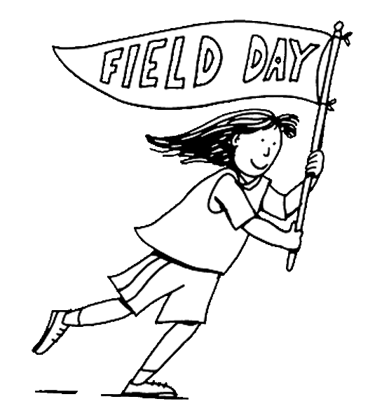

Field Day is Friday June 4th! (Rain Date: Monday June 7th) 
Calling all McKenzie Moms and Dads to help! Come watch your child compete in the long jump or 50-yard-dash, and help out with all fun along the way. We can’t have a successful Field Day without YOU! Volunteers are needed to keep score, help with the refreshment table and set up. Sign-ups are in the lobby. Questions or Volunteer - please contact: There are two shifts: |